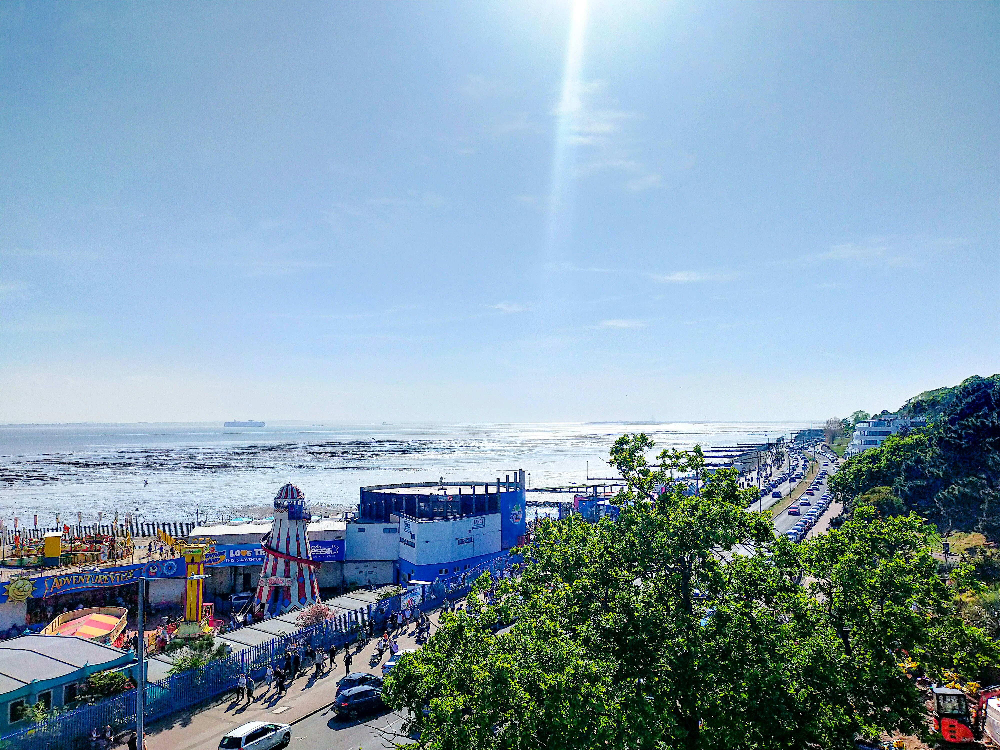
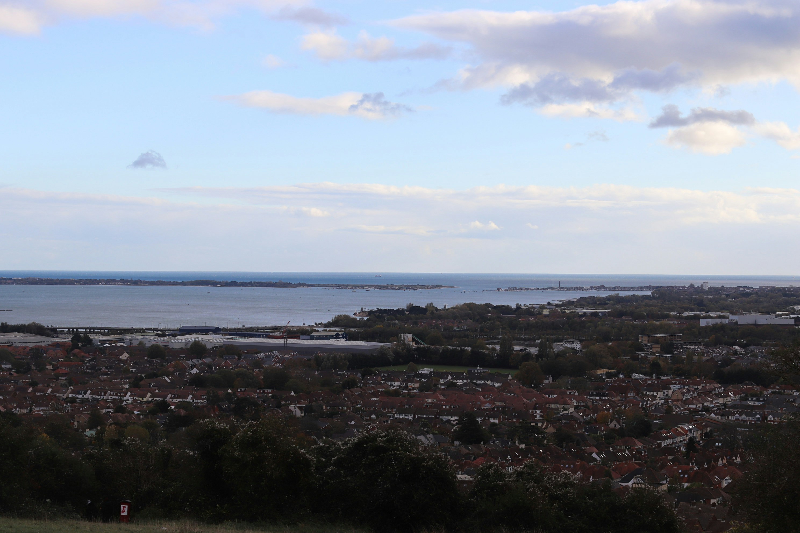

Why Use This Site
This site keeps the planning process more simple by putting basic waterfront destination details, attractions, and activity ideas in one place.
Featured Destinations

Blue Harbor
A calmer waterfront stop with local activity, scenic views, and simple trip planning.
View Destination
Driftwood Bay
A quieter destination with waterfront access, local spots, and a short trip feel.
View Destination
Sunset Point
A scenic option with relaxing views and nearby places worth checking out.
View DestinationQuick Site Features
- Destination pages with short overview sections
- Attractions and review sections for each featured spot
- A favorite locations page for highlighted places
- A things to do page with simple activity ideas
- A contact page for questions and feedback